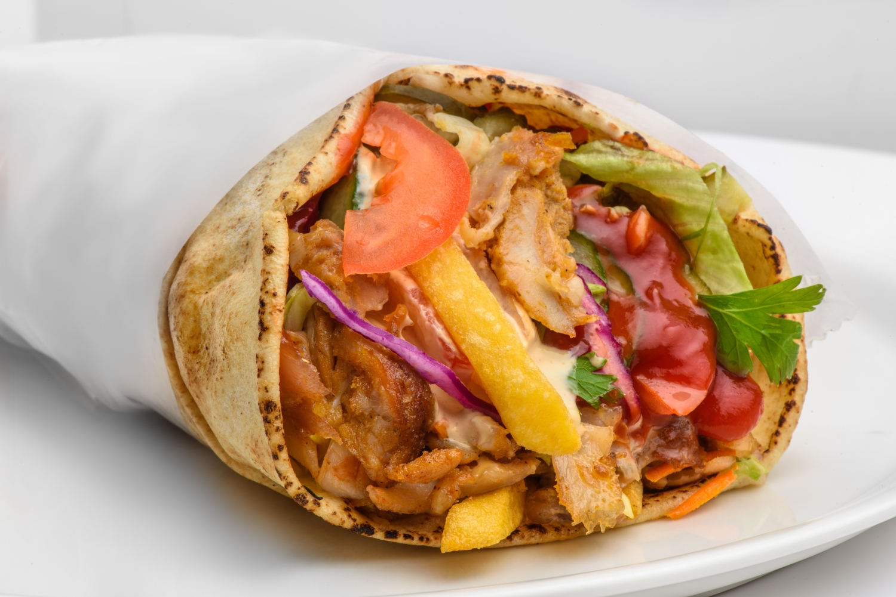
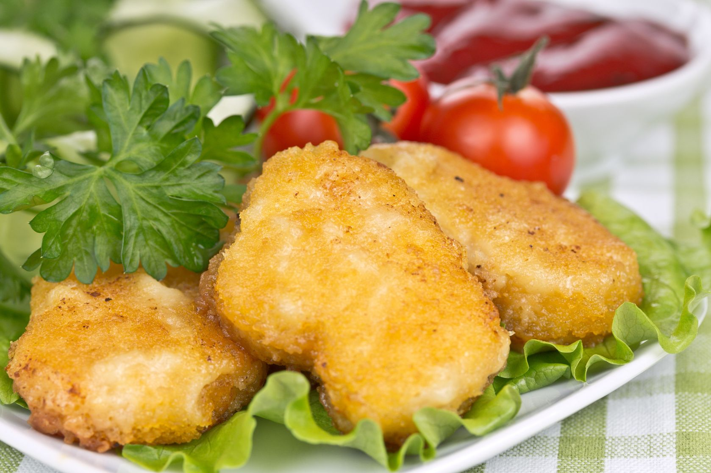

Ingrediente:
- 2 piepti de pui
- 3-4 cartofi
- varza proaspata
- 1 ceapa galbena
- 2-3 castraveti murati
- 1 pahar mic smantana slaba
- 2 catei usturoi
- 2 linguri ketchup
- 4 lipii medii
- sare
- piper
Shaorma de pui

- . Curata si feliaza cartofii pentru prajit, feliaza si frige pieptul de pui pe gratar si taie legumele marunt.
- Intr-un castron, ia fiecare felie de piept de pui si marunteste-o cu mainile in fasii lungi (ai mai mult spor decat cu un cutit), rupand bucatile pe fibra.
- Intr-un alt castron, marunteste usturoiul in smantana si amesteca, apoi adauga sare si piper dupa gust.
- Taie fin varza, ceapa si castravetii.
- Dupa ce ai prajit si cartofii, e timpul sa asamblezi shaorma: incalzeste putin lipia la aragaz, pe focul dat mic, unge lipia cu sos de usturoi,
apoi pune cate o patrime din ingrediente in ordinea urmatoare: carne, cartofi, ketchup, urmate de varza, ceapa si castravetii murati.
- Nu umple foarte tare lipia, astfel incat sa poti ridica marginea de jos a acesteia peste ingrediente, si sa o poti rula cu usurinta. Dupa ce ai strans-o bine (ai grija sa nu se rupa lipia!),
imbraca mana cu o punga alimentara si cuprinde partea de jos a shaormei, apoi ridica punga incat sa o infasori strans in jurul lipiei, incat sa nu se desprinda in timp ce o savurezi.
- Procedeaza la fel cu celelalte 3 lipii ramase si astfel obtii 4 portii de shaorma de pui, facuta in casa.
Ingrediente:
- 30 ml ulei de floarea soarelui
- 5 bucata catei de usturoi
- un fir de praz
- 3 bucati gogosari
- sare, piper, cimbru
- legătură de ceapă
- 40 g carne de porc tocată
- 1 legatura mărar
HAMBURGERI CU LEGUME
- Se curăţă ceapa verde, se spală şi se toacă mărunt. Carnea tocată se amestecă cu ceapa şi se condimentează cu sare şi piper, după gust. Se frământă bine şi se lasă la rece câteva minute.
- Ciupercile se curăţă, se spală, se taie şi se călesc în ulei. Se stropesc cu apă călduţă şi, treptat, se adaugă usturoiul mărunţit, prazul tăiat rondele şi gogoşarii feliaţi.
- Legumele se călesc, se înăbuşă cu apă călduţă şi se lasă să fiarbă la foc mic. După ce au scăzut şi s-au fiert, se prepară cu sare şi piper, după preferinţă. Se dau câteva minute şi la cuptor, atât cât să capete o crustă aurie.
- În timpul acesta, se încinge grătarul, se unge cu grăsime şi se pregătesc hamburgerii. Se pun pe grătar şi se lasă să se rumenească. Se răsucesc la intervale de 5-10 minute. După ce s-au copt, se servesc ornaţi cu legumele coapte și mărar proaspăt.
Ingrediente:
- 500 g piept de pui
- 150 g faina
- 150 g pesmet
- 150 g fulgi de porumb (ideal fara zahar)
- 2 oua
- 80 g parmezan ras
- ulei pentru prajit
Nuggets de pui

- Taie pieptul de pui in bucatele de 4-5 cm.
- Zdrobeste fulgii de porumb cu un facalet sau in robotul de bucatarie. Amesteca fulgii zdrobiti cu pesmetul si parmezanul.
- Avand fulgii amestecati cu parmezanul intr-un castron, pune faina intr-un recipient, ouale intr-altul si trece fiecare bucata de pui prin faina-ou-fulgi de porumb.
- Prajeste nuggets de pui pana devin aurii si crocanti